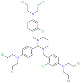
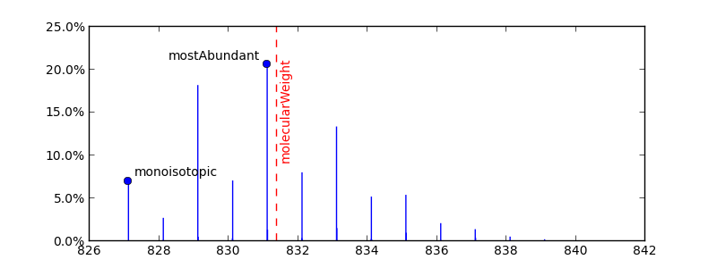

Different Mass Computation Methods¶
There are three different methods to compute molecule mass in Indigo:
- molecularWeight – returns the molecular weight (molecular mass), i.e. the average mass of all the isotopic compositions for a given structure.
- mostAbundantMass – returns the “most abundant isotopes mass”, i.e. the mass of a most common isotopic composition.
- monoisotopicMass – returns the monoisotopic mass, i.e. the mass of structure where the most abundant isotope is used for all atoms.
On a small molecules the methods mostAbundantMass and monoisotopicMass returns the same results. But on a large molecules, or on a molecules with atoms that have more than one stable isotope (like Chlorine) these methods returns different results.
Real example¶
For example, let’s look at the structure with ChemSpider ID = 370269:
{kind=link}

The following code computed molecule formula and three difference masses:
m = indigo.loadMoleculeFromFile('data/csid-370269.mol')
print "Molecule formula:", m.grossFormula(), "\n"
print "molecularWeight = ", m.molecularWeight()
print "mostAbundantMass =", m.mostAbundantMass()
print "monoisotopicMass =", m.monoisotopicMass()
Molecule formula: C36 H45 Cl8 N5
molecularWeight = 831.400024414
mostAbundantMass = 831.112426758
monoisotopicMass = 827.118347168
All three masses are different and this can be illustrated on the isotope distribution plot for this structure [1]. Each peak on this plot corresponds to single isotopic composition:
{kind=link}
Molecule masses are the following:
- molecularWeight is the sum of the standard atomic weights of all the atoms (if isotope is not specified), and it is the same as the weighted sum of all the peak values multiplied by peak abundance.
- mostAbundantMass corresponds to the highest peak.
- monoisotopicMass corresponds to a peak with default atom isotopes
Synthetic example¶
Difference of these masses can be explained on another example with a structure with 1000 Carbon atoms (without Hydrogens). There are two relevant carbon isotopes: 12C with 98.9% natural abundance, and 13C with 1.1%.
- molecularWeight = 1000 * MC
- mostAbundantMass = 989 * M12C+ 11 * M13C [2]
- monoisotopicMass = 1000 * M12C
molecularWeight = 12010.7001953
mostAbundantMass = 12011.0371094
monoisotopicMass = 12000.0
Source data¶
Natural abundance, standard atomic weight, and relative atomic masses are taken from the NIST Atomic Weights and Isotopic Compositions Database.
Footnotes
| [1] | Data is computed using the isotopes distribution online calculator Isotope Distribution Calculator and Mass Spec Plotter service from Scientific Instruments Services |
| [2] | If we pick 1000 random Carbon atoms that forms a structure, then with a high probability there will be 989 of 12C atoms, and 11 of 13C atoms |